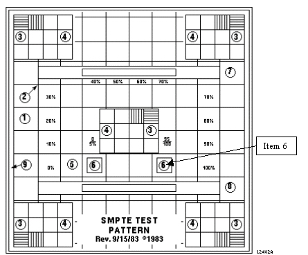
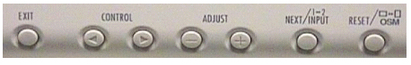

Operating Documentation
Direction 5133330-3, Rev# 14
Signa EXCITE HD 3.0T Service Methods
Module Version 3.0, Version Date 11/5/09
Operating Documentation |
The Auto Adjust procedure done in Section 5takes care of these for you. All other values in the Screen Manager should stay at the default values except Contrast and Display.
Use this appendix only if you see problems with Focus, screen position relative to monitor mask or phase problems (horizontal bars sweeping through the LCD). Or any vertical problems.
This section is normally not needed. However, if you cannot adjust the monitor satisfactorily, with the front panel buttons and OnScreenManager, you may want to try the adjustments described in this section.
From the Tools Menu on Signa Open a [C-Shell].
Type: [toolchest&]. A pulldown menu will appear in the upper left-hand portion on the display as shown in Illustration 1.
Select [System] with the Right mouse button.
Select [Confidence Tests] from the extended menu. A “confidence test” pop-pup will appear after a few seconds.
From the “confidence test” pop-up, select the [Monitor Icon]. A monitor calibration menu will appear on the screen.
Select [Focus] from the "Test Options" menu by using the <Tab> key.
Put the mouse pointer on the [Test Options Menu]. Click the Middle mouse button to toggle (Hide) the "Test Options" menu.
Push the auto-adjustment button on the front of the monitor. This should setup Focus, Horizontal, Vertical Centering, sync to the proper Clock Rate and monitor Phase.
Observe the test pattern displayed, it should now be centered and in focus. This should be all that is necessary to adjust the display controllers' output to match the LCD monitor.
Toggle the “monitor calibration” toolbar back on by selecting the middle mouse. Select the [grayscale] menu option.
Toggle the menu back off by selecting the middle mouse again.
Illustration 1: TOOLCHEST MENU

This alternative procedure uses the Monitor Calibration tools and patterns. Steps 1 through 4 should be done while observing the image for crisp lines, overall uniformity of pattern, and to setup the LCD monitor so it is at its brightest level without "Blooming the image or adding distortions". The intent of this part of the appendix is to achieve the best image appearance you can with the LCD. At the completion of this section you should check the display against industry standard SMPTE pattern. (See Section 7 of this procedure - LCD CALIBRATION FOR OPTIMUM IMAGE VIEWING)
Select [Contrast/Brightness] button and push <enter>.
Adjust brightness to maximum level 100%.
Look at the monitor and adjust the Contrast and Brightness to optimize the test clarity of the test pattern. This is an iterative process between both settings.
When satisfied with the displays' contrast and brightness setting is properly achieved, push the <enter> button to save the adjusted Contrast/Brightness settings.
Exit the Monitor Calibration by selecting [Quit].
Select [File] on the Confidence Test Window and choose [Exit].
Click on the word [Toolchest] at the top of the menu with the Right mouse button and select [Close].
Exit the C-Shell by typing: Exit [Enter]
The monitor should be positioned no closer than 16 inches and no further away then 28 inches from your eyes. The optimal distance is 24 inches for either of the monitors.
| NOTE: | Allow the monitor to warm-up for 20 minutes before performing any adjustments. |
| NOTE: | The response time for the LCD monitor is 100 ms. It is normal to see a “trail” on the screen if the mouse is moved quickly. |
You will need to use the SMPTE pattern for this adjustment. Refer to that section in this procedure.
From the Contrast and Brightness icon use the Control buttons to adjust the contrast lower if the maximum setting causes visible tearing or smearing of the pattern or alphanumeric characters (items 1,2,5-8 in Illustration 2).
From the Contrast and Brightness icon use the Control buttons to adjust the brightness of the display monitor if the 5% and 95% patches are not visible (item 6 in Illustration 7-3).
| NOTE: | It may be necessary to re-adjust the contrast if tearing or smearing of the pattern or alphanumeric characters occurs (items 1,2,5-8 in Illustration 2). |
Illustration 2: SAMPLE SMPTE TEST PATTERN

The NEC 1850X LCD Panel Display does not have an RGB (BNC) style input. The video cabling uses an S-VGA type connection. It also has additional DVI/D-SUB input capability. This feature allows for the switching of inputs between two LCD Monitors, (Not Used by GE).
Illustration 3: BUTTONS ON FRONT PANEL

| NOTE: | Adjustment information is not lost when the power is removed from the monitor. |
The functions of the OSMTM controls
on the front of the monitor are described in Table A-1. To access
the OSM, press any of the control buttons  or the RESET/OSM or EXIT buttons.
or the RESET/OSM or EXIT buttons.
| NOTE: | When RESET is pressed, a warning window will appear allowing you to cancel the reset function. |
Table 1: FRONT PANEL CONTROL FUNCTIONS - MODEL 1850X LCD MONITOR
| Control | Main Menu | Sub-Menu |
| EXIT | Exits the OSMTM controls. | Exits to the OSMTM controls main menu. |
CONTROL  | Used to access main menu.Moves the highlighted area up/down to select one of the controls. | Moves the highlighted area up/down to select one of the controls. |
CONTROL  | Has no function | Moves the bar in the + or - direction to increase or decrease the adjustment |
| Next/ Input 1-2: | Allows movement within the highlighted menu. | Moves Highlighted area within option. |
| RESET/OSM: The currently highlighted control to the factory setting | Resets all the controls within the highlighted menu. | Resets the highlighted control. |
This section describes the adjustments available for the OSM controls.
Brightness and Contrast 
Brightness: Adjusts the overall image and background screen brightness.
Contrast: Adjusts the image brightness in relation to the background.
Auto Adjust Contrast: Adjusts the image displayed for non-standard video inputs.
Auto Adjust 
Automatically adjust the Image Position or the H. Size setting.
Position Controls 
“H” Position: Controls Horizontal Image Position within the display area of the LCD.
“V” Position: Controls Vertical Image Position within the display area of the LCD.
Auto: Automatically sets the horizontal and vertical image position within the display area of the LCD.
Image Adjust Controls 
“H” Size: Adjusts the horizontal size by increasing or decreasing this setting.
Fine: Improves focus, clarity, and image stability by increasing or decreasing the Fine setting.
Auto Adjust Coarse: Automatically adjusts the Coarse setting.
AccuColor® Control System 
Five color presets select the desired color setting. This setting must be set to selection 1 - 9300. If a setting is adjusted, the name of the setting will change to Custom.
R, B, G: Increases or decreases the color depending upon which is selected. The change in color will appear on screen and the increase or decrease will be shown by the color bars.
Tools 1
You can choose where the OSM control image appears on the screen. Selecting OSM Location allows you to manually adjust the position. Normally, no adjustment is necessary. Use default values.n
Smoothing - (Normal) Default
Expansion Mode- (Full Screen) Default
Video Detect- (First Detect) Default
DVI Selection- (Default) No effect on S-VGA systems
Sound- Minimum (Default)
Tools 2
You can choose where the OSM control image appears on the screen. Selecting OSM Location allows you to manually adjust the position. Normally, no adjustment is necessary. Use default values.
Language- English
OSM Position- Default location
OSM Turn OFF- Default
OSM Lock Out
This control completely locks out access to all OSM control functions. When attempting to activate controls while in Lock Out mode, a message screen will appear indicating that the controls are locked out. Lockout is NOT recommended.
Factory Preset
This allows you to reset all OSM control settings back to the factory settings. Highlighting the setting and then pressing the RESET button can reset individual settings.
Resolution Notifier
Optimal Resolution is 1280x1024. If ON is selected a message will appear on the screen 30 seconds, notifying the user that the resolution is NOT at 1280x1024.
Information 
Indicates the current display resolution, frequency setting, and type of Sync signal of the monitor. All items under this menu should not be changed. Use default values.
| NOTE: | Mode Change should only be used if the monitor does not recognize a resolution. This shouldn’t ever be the case with our system. You can change to the appropriate resolution by selecting the Mode information and selecting (increase or decrease) the corresponding option. |
18.1-inch (18.1" viewable image size), active matrix, thin film transistor (TFT), liquid crystal display (LCD),0.28 mm dot pitch, XtraView+ technology, RGB vertical stripe color filter arrangement, 240 cd/m2 white luminance typical, 300:1 contrast ratio - typical
Ultra-Thin Frame (bezel), Xtraveiw+ Technology, No touch auto-adjust, OmniColor, sRBG color setting, Ambix support for analog and digital connections, 3rd-Party Touch Screen and Protective Glass integration, Digital Smoothing, Digital Control, Color Control (4 mode + sRGB, OSM Plug and Play (VESA DDC 1/2B), VESA DPMS Power Management, User (OSM) controls, Optional MultiSync sound bar (attachable in either portrait and landscape mode)
Separate sync: TTL level (Positive/Negative) Composite sync: TTL level (Positive/Negative) Sync on Green: Video 0.3 Vp-p Negative (0.7Vp-p postive)
16.7 Million
(Dependent upon display card used)
Left/Right: 85°
Up: 85°
Down: 85°
Horizontal: 31.0 kHz to 82.0 kHz
Vertical: 55.0 Hz to 85.0 Hz
720 x 400* @ 70 Hz
640 x 480 @ 60 Hz to 85 Hz
800 x 600* @ 56 Hz to 85 Hz
832 x 624* @ 75 Hz
1024 x 768 @ 60 Hz to 85 Hz
1280 x 1024 @ 60 Hz to 76 Hz
| NOTE: | Some systems may not support all modes listed. |
Horizontal: 14.1 inches / 359 mm
Vertical: 11.3 inches / 287 mm
(Dependent upon signal timing used)
Ambix (VGA 15pin & DVI-I)
ON: 65 W
Power Savings Mode: 3 W
Universal 100 (110-240V) 50-60Hz Internal
0.8A @ 100 - 120V / 0.4A @ 220 - 240V
15-pin mini D-SUB to 15-pin mini D-SUB (Supplied)
Net (with stand):
15.7 in (W) x 17.5 in (H) x 8.6 in (D)
398 mm (W) x 452 mm (H) x 218 mm (D)
Net (without stand):
15.7 in (W) x 13.7 in (H) x 2.9 in (D)
398 mm (W) x 349 mm (H) x 74.4 mm (D)
Gross:
21.1 in. (W) x 21.6 in. (H) x 12.3 in. (D)
535 mm (W) x 548 mm (H) x 312 mm (D)
Net (with stand): 18.7 lbs. / 8.5 kg
100 x 100 mm
+41° F to +95° F / +5° C to +35° C
30% to 80%
0 to 10,000 Feet
+14° F to +140° F / -10° C to +60° C
10% to 85%
User's Manual, (1) VGA 15-pin D-Sub cable, (1)DVI-D to DVI-I cable, (1) Power cord, (1) CD-ROM, with Liquid View (tm) software, and Portrait software.
3-Year Parts and Labor, 3-Year backlight
IPMTM (Intelligent Power Manager) System, EPA Energy Star®, meets NUTEK based on 2 power saving modes
Power, Brightness, Contrast, Vertical and Horizontal Position, Phase, Color Control
UL/C-UL or CSA; TUV/GS; ENERGY STAR; TCO '95; CE; FCC CLASS B/CANADIAN DOC; TUV/ERGONOMIE; MPRII; Ctick